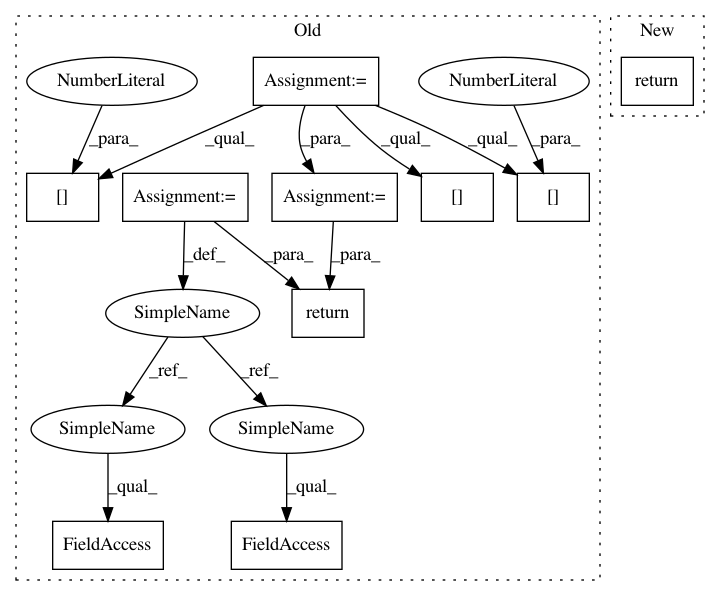

beb1fb180aec3b062f0b007afe049cf22a1bbb1c,osim-rl/env/osim.py,OsimEnv,compute_reward,#OsimEnv#,32
Before Change
return min(x, 2*math.pi-x)
def compute_reward(self):
obs = self.get_observation()
// print (obs[0], obs[1])
up = (2*(math.pi**2) - angular_dist(obs[0],math.pi)**2 - angular_dist(obs[1],0.0)**2)/(2*math.pi**2)
still = (obs[2]**2 + obs[3]**2) / 400
// print still
return up - still
def is_done(self):
return False
After Change
return min(x, 2*math.pi-x)
def compute_reward(self):
return 0.0
def is_done(self):
return False
In pattern: SUPERPATTERN
Frequency: 3
Non-data size: 10
Instances
Project Name: stanfordnmbl/osim-rl
Commit Name: beb1fb180aec3b062f0b007afe049cf22a1bbb1c
Time: 2016-11-16
Author: lukasz.kidzinski@gmail.com
File Name: osim-rl/env/osim.py
Class Name: OsimEnv
Method Name: compute_reward
Project Name: pyprob/pyprob
Commit Name: 6aac747a8d9a55ca91d6408fee9a386289720a8e
Time: 2017-11-28
Author: webmaster@tobiaskohn.ch
File Name: pyprob/state.py
Class Name:
Method Name: extract_address
Project Name: stanfordnmbl/osim-rl
Commit Name: beb1fb180aec3b062f0b007afe049cf22a1bbb1c
Time: 2016-11-16
Author: lukasz.kidzinski@gmail.com
File Name: osim-rl/env/osim.py
Class Name: OsimEnv
Method Name: compute_reward
Project Name: tensorflow/models
Commit Name: 5fc4c351699c9007a727eaaef99413962cf0818f
Time: 2020-12-09
Author: hongkuny@google.com
File Name: official/nlp/modeling/layers/self_attention_mask.py
Class Name: SelfAttentionMask
Method Name: call